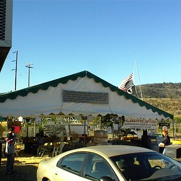
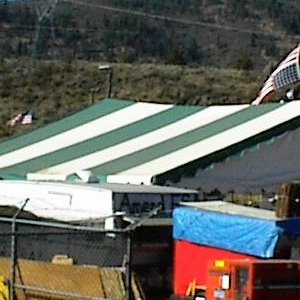
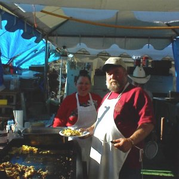
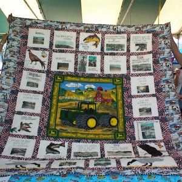
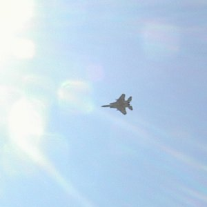
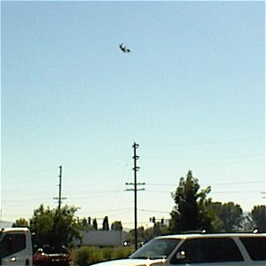
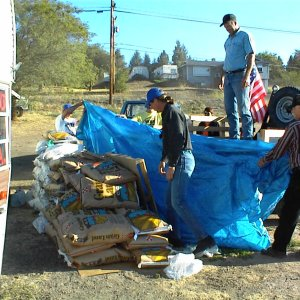
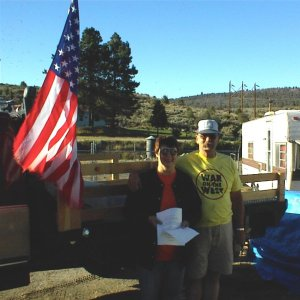

|
Eyewitness Account - Report Number Three By: Jeff Head, Augustr 18, 2001 Myself and my youngest son Jared arrived back at the headgates in Klamath Falls, Oregon, at 3:50 AM on Saturday morning after driving all night from Emmett, Idaho. I had been involved from the time the headgates were opened by the farmers in defiance of a federal court order that was destroying these families for frivolous and ill defined reasons, and Jared and I had been there a few weeks earlier, following up on that initial experience. Around 8:30 AM I got up and took a walk over to the headgates. I noticed that the area was set up in preparation for the upcoming activites Sunday-Tuesday when Church service, rallies, receptions of the relief convoys and distribution of material would take place. LOTS of preparation remaining to be done. I also noticed that the Federal officers had raised their own flag over in the "compound". It's staff was right side up, contrasted to the distress signal continuing to be broadcast by the local farmers whose flag was displayed accordingly upside down.   When they were completed I introduced myself to the Fish and Wildlife man and said the following, "Sir, with all due respect, the very fact that we are sitting here talking about the "science" of the sucker fish when there are 1400 honest and patriotic American families, many of them verterans, being destroyed by this decision is a travesty. Where is common sense? Where is decency? This is not about the sucker fish and anyone who lives in this part of the country knows it. Those fish would survive fine if the lake was drained to mud ... and we all know it. This is about regualtory madness and the desire to control the land. We know this and are not about to forget it. in the end, our ability to retain our property rights hinges on decisions such as this." We then parted and nothing more was said. A little later, Jared and I were shown a magnificant quilt that two of the older women had created commemorating the entire event. They are raffling it off on Tuesday at yhe large gathering and it is already bringing in A LOT of money for the relief.   We are hoping for tens of thousands of people here on Tuesday. We are asking anyone within driving distance to be here Tuesday morning at 10 AM when those events take place. The city has issued a permit for the event when the convoys arrive ... but they are only allowing EIGHT vehicles in the official parade. They don't want to congest traffic on a workday. What will happen is that the other hundreds of vehicles will come anyway and they'll just obey the trafiic lights and congest traffic all the more. Late in the afternoon on Saturday, August 18th, several of us went to the airshow (three teams of two) that was going on at the local national guard airbase to gather signatures for the petition. Soon after starting to gather signatures, my team (myself and Jared) had a line of six or eight people lining up to sign. Within a few minutes, Jard and I were surrounded by Airforce Military Security, siz to eight armed men who stopped the signatures and wanted to see what we were having people sign. They young man (I'd say mid-twenties) who read it, said after minute, "Heck, this is nothing, off duty I'd sign this". But he had to wait for his Chief and in a few minutes the deputy commander for the base and the Chief showed up. The Chief simply told us that they could not allow the solicitation of a petitioon on the base. We stopped and within a few minutes they had gathered one of our other teams. The third team was never noticed and we met at the appointed time with another 70 signatures for the petition. No pictures of the security detail were allowed.   Early Sunday morning, our first truck, a one ton flatbed, arrived from Montana. A couple heading down to move the mother inlaw from California up to Montana. They had 3300 lbs. of feed with them which we helped off load.   Finally, I MUST share with you the closing of a speech that will be delivered by Bill Ranson, a local rancher and businessman, and one of the individuals helping organize the Klamath Relief Fund. This speech will be delivered in California today at one of the convoy stops and ill also be delivered on Tuesday at the main rally. Please listen to these passionate and heartfelt words: In cosing, I would like to address President Gorge Bush.And finally, here is a compilation of qoutes from farming families and others here in the Klamath Basin. This was compiled by Cindy Smith. "For generations my famil has owned this land. We have a deed of sale signed by President Herbert Hoover himself, promising we'd always have water to our fields." I hope all Americans will hear these voices and carefullt consider the ramification to all of our liberties and ways of life by letting this reprehensible travesty continue or stand. Please, take action to support these folks and end the assault on liberty and our rights. That's the status as of now, Sunday morning, 11 AM at the headgates.
Jeff Head
SIGN THE NATIONAL PETITION FOR THE KLAMATH BASIN CRISIS
CLICK BELOW FOR BOOKS/NOVELS OF INTEREST: 


[Please consider visiting these sites as well] The Attack on America Memorial Site - The Winning Iraqi Freedom Dedicatory Site
Copyright © 2001-2006 by Jeff Head, All Rights Reserved
|